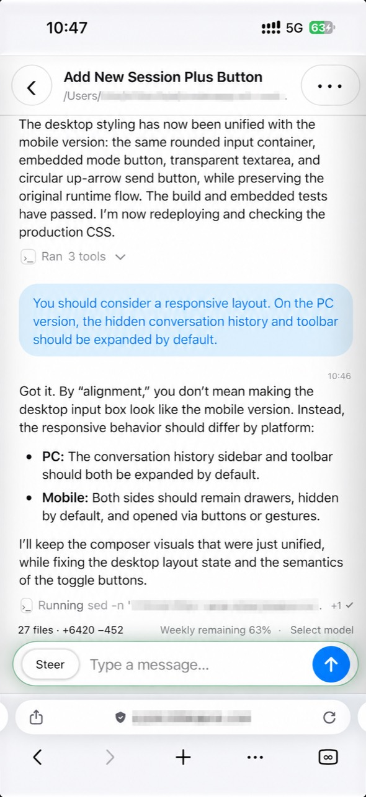

Homelab 与 NASHomelab and NAS
Codex 与代码仓库运行在同一台 Linux、NAS 或 Mac 主机上，浏览器关闭后任务仍可继续。
Keep Codex beside your repositories on Linux, a NAS, or a Mac host, with tasks continuing after the browser closes.
把 Codex app-server 部署在项目所在的 Homelab、NAS、Mac mini 或 Linux 主机上，再通过手机、平板和终端快速控制。配合 Cloudflare Tunnel 与 Access，无需开放公网端口即可安全远程访问，也不依赖 ChatGPT 客户端充当远程控制层。
Run Codex app-server beside your projects on a homelab, NAS, Mac mini, or Linux host, then control it quickly from a phone, tablet, or terminal. Add Cloudflare Tunnel and Access for secure remote access without opening a public port or relying on a ChatGPT client as the control layer.

Codex 与代码仓库运行在同一台 Linux、NAS 或 Mac 主机上，浏览器关闭后任务仍可继续。
Keep Codex beside your repositories on Linux, a NAS, or a Mac host, with tasks continuing after the browser closes.
使用 Cloudflare Tunnel 和 Access 将环回 Web UI 安全带到外网，无需路由器端口转发。
Put the loopback Web UI behind Cloudflare Tunnel and Access, without router port forwarding.
在手机上查看消息、工具和 Diff，排队后续消息、跟进运行中的任务或远程停止。
Review messages, tools, and diffs from a phone; queue the next message, steer an active turn, or stop it remotely.
v0.1.0 覆盖会话创建、实时交接、多会话任务总览、结构化工具展示和长会话优化， 并由同一套 Rust/WASM Demo 契约持续验证前端行为。
v0.1.0 covers session creation, live handoff, a multi-session task overview, structured tools, and large-session performance, with the frontend continuously checked against the same Rust/WASM demo contract.
在当前项目目录或隔离 Git worktree 中创建会话；空会话无需等待首条 rollout 即可打开、输入和提交。
Start in the current project or an isolated Git worktree. Empty sessions open and accept their first message before a rollout exists.
持久化 app-server 连接统一承载 queue、跟进、停止、运行状态、模型和限额更新。
A persistent app-server connection carries queue, steer, stop, activity, model, and rate-limit updates.
从会话列表同时查看运行中和最近完成的任务，包括最近输入、Agent 回复、工具进度和最终状态，并可直接跳回完整会话。
Watch active and recently finished tasks together, including the latest prompt, agent response, tool progress, final state, and a direct link back to each full session.
移动端和桌面端共享消息、输入框、工具、Diff、主题与设置组件，并支持中英文。
Mobile and desktop share message, composer, tool, diff, theme, and settings components, with persistent English and Chinese preferences.
跳过非展示记录，工具输出按偏移按需读取；312.6 MiB 回归会话的预热 RSS 从约 422 MiB 降至 127 MiB。
Non-display records are skipped and tool outputs load by offset; pinned RSS for the 312.6 MiB regression session fell from about 422 MiB to 127 MiB.
# Install as user services (no sudo) $ ./scripts/install-macos.sh --web-ui $ ./scripts/install-linux.sh --web-ui # Runtime choices live in one user config $ $EDITOR ~/.config/codex-bridge/config.toml # Inspect and control Codex $ codexctl ls $ codexctl select <THREAD_ID> $ codexctl send "Review the current changes"
Web UI 默认使用 Basic Auth 和七天有效的 HttpOnly 会话。部署在 NAS 或 Homelab 时，建议保持环回监听，并通过 Cloudflare Access、VPN 或同机 HTTPS 反向代理提供远程入口。
Basic Auth normally bootstraps a seven-day HttpOnly browser session. On a NAS or homelab, keep the listener on loopback and publish it through Cloudflare Access, a VPN, or an authenticated same-host HTTPS reverse proxy.